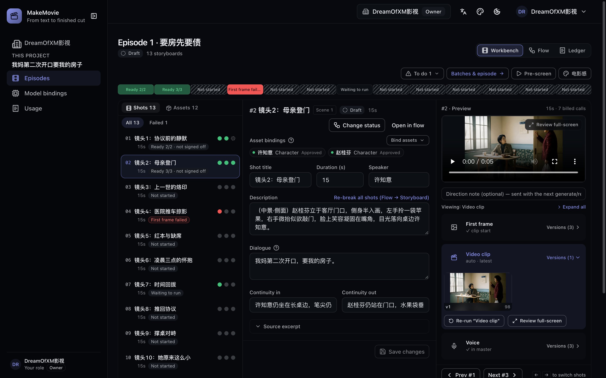
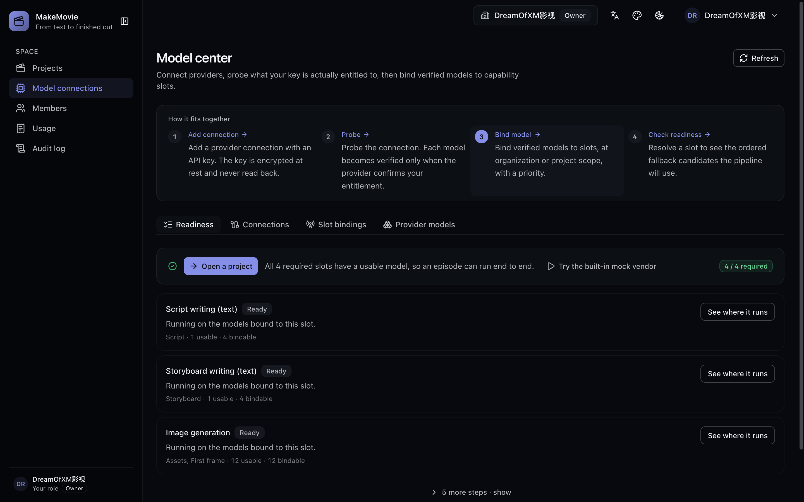

Turn a page of story into a delivered episode.
MakeMovie takes a piece of source writing — a novel excerpt, a treatment, a screenplay — and returns an episode master: the shooting script, the shot list, cast and prop references, first frames, clips, character voices, a score bed, subtitles and a delivery manifest. Text stages chain on their own. Every stage that costs you something waits for a button.
Nothing is queued until you see the count. Before a batch starts, the console says how many tasks it will create and which shots are still missing their inputs — so the spending decision is made once, on real numbers, instead of discovered later in a bill.
git clone https://github.com/DreamOfXM/makemovie.git

We believe the barrier to telling a story shouldn't be the size of your budget or your crew. MakeMovie exists to open a new possibility for everyone who loves making videos: one person, one computer, and a story worth telling is enough to deliver a real episode.
What a prompt box leaves out
You stay the one who decides.
The generation is the easy part. What breaks a real production is the part nobody builds: who signed for the spend, which version made it into the cut, and what it cost you.
Approval sits in front of the spend
Source, script and reference images each have an approve action, and the pipeline stops at every stage that bills you. Regenerating a stage is deliberate, and a running batch can be stopped from the console — cancelling what has not started instead of letting a mistake finish.
Stages that cost wait for a click
Every artifact carries its own paper trail
Each script, shot, asset and media file records the task, prompt, provider, model and quality check that produced it. Versions run one continuous number per shot and stage, so a re-run gives v2 rather than minting a second v1 — and a rejected artifact names its reason.
task · prompt · provider · model · score
Usage in units, never a bill
The ledger reports physical quantities only: billed calls, retries, prompt characters, artifact bytes — per stage and per model. There is no currency field anywhere in the console or the API, because the app cannot see what your vendor actually charges you.
calls · retries · characters · bytes
It runs where you run it
Your Postgres, your Redis, your disk or S3 bucket, your keys — encrypted at rest and never returned by a read endpoint. There is no analytics or telemetry code in the app: the only outbound calls go to the model vendors you bind and the storage endpoint you configure.
docker compose up -d
Against the crowd
Generators hand you clips. This hands you an episode.
The category leaders — closed or open source — are excellent at one shot from one prompt; the appetite for one-click video is real. MakeMovie starts from a piece of writing and ends at a master plus an edit list, with a human approval between the two.
| Product | What you feed it | Where it runs | Approval before the render spend | Lineage per artifact |
|---|---|---|---|---|
| MakeMovie | A novel excerpt, treatment or screenplay | Your own machine or server — Compose stack, Apache-2.0 | Yes — built into the pipeline | Yes — task, prompt, model and score |
| LTX Studio | Script, concept, image or video | Hosted service | — | — |
| Runway | Prompt or reference media, per generation | Hosted service | — | — |
| HeyGen | Script or prompt, avatar-led | Hosted service | Stated on its enterprise tier | Stated on its enterprise tier |
| Kling | Prompt or image, per clip | Hosted service | — | — |
| Pika | Prompt or image, per tool | Hosted service | — | — |
| MoneyPrinterTurbo | A topic or keyword — auto-written copy over retrieved stock footage | Your own machine — open source (MIT) | — | — |
| ShortGPT | A topic — an automation framework: LLM script, sourced footage, voiceover, auto-edit | Your own machine — open source (MIT, Python framework) | — | — |
| NarratoAI | Existing footage — AI writes the narration and auto-edits it into a video | Your own machine — open source, self-hosted | — | — |
MakeMovie
- What you feed it
- A novel excerpt, treatment or screenplay
- Where it runs
- Your own machine or server — Compose stack, Apache-2.0
- Approval before spend
- Yes — built into the pipeline
- Lineage per artifact
- Yes — task, prompt, model and score
LTX Studio
- What you feed it
- Script, concept, image or video
- Where it runs
- Hosted service
- Approval before spend
- —
- Lineage per artifact
- —
Runway
- What you feed it
- Prompt or reference media, per generation
- Where it runs
- Hosted service
- Approval before spend
- —
- Lineage per artifact
- —
HeyGen
- What you feed it
- Script or prompt, avatar-led
- Where it runs
- Hosted service
- Approval before spend
- Stated on its enterprise tier
- Lineage per artifact
- Stated on its enterprise tier
Kling
- What you feed it
- Prompt or image, per clip
- Where it runs
- Hosted service
- Approval before spend
- —
- Lineage per artifact
- —
Pika
- What you feed it
- Prompt or image, per tool
- Where it runs
- Hosted service
- Approval before spend
- —
- Lineage per artifact
- —
MoneyPrinterTurbo
- What you feed it
- A topic or keyword — auto-written copy over retrieved stock footage
- Where it runs
- Your own machine — open source (MIT)
- Approval before spend
- —
- Lineage per artifact
- —
ShortGPT
- What you feed it
- A topic — an automation framework: LLM script, sourced footage, voiceover, auto-edit
- Where it runs
- Your own machine — open source (MIT, Python framework)
- Approval before spend
- —
- Lineage per artifact
- —
NarratoAI
- What you feed it
- Existing footage — AI writes the narration and auto-edits it into a video
- Where it runs
- Your own machine — open source, self-hosted
- Approval before spend
- —
- Lineage per artifact
- —
How this was compiled: on 5 October 2026 we read the products' own public pages — LTX Studio's /studio, Runway's /enterprise, HeyGen's home and enterprise pages, Kling's and Pika's home pages, and the GitHub repositories of MoneyPrinterTurbo and ShortGPT (October 2026). A dash means the page did not state it, which is not a claim about the software. LTX does license open model weights for on-prem and air-gapped use; that is the model, not the studio. Inclusion criteria: this table lists products in the same job — turning text or footage into finished video automatically. Model-weight repositories (Wan, Open-Sora, CogVideoX, HunyuanVideo…), render-as-code frameworks (Remotion, Revideo…) and subtitle/translation pipelines (VideoLingo…) all rank high in stars — they are different trades and are deliberately left out. GitHub carries dozens of pipelines in this space; the table keeps the most representative of each path, and if one belongs here, an issue saying which row it should replace is welcome.
The chain
Eight things happen, in this order.
Each one is a place on the page, not a hidden API call. You can step through them one at a time or let the text stages relay themselves.
Script
Paste or upload the source, approve it, and the platform writes the shooting script: scenes, dialogue, speakers — in the language you set for the content, budgeted against the episode's target runtime at 350 spoken characters a minute.
- A whole novel is split by chapter; two one-click presets propose the episode boundaries, and they stay editable afterwards.
- Editing an approved script recomputes its checksum and returns it to draft, so a change cannot slip past a second approval.
Cast, props and scenes
The breakdown extracts who and what appears and builds one sheet per asset. Its reference image is drawn with the project's style preset, so the cast sheets, the frames and the master share one color DNA instead of every shot arguing with its own reference.
- You approve a likeness before it is used, and a voice can be registered on the character rather than on a line.
- A shot whose text mentions people but names no cast gets those characters' approved appearance injected; a shot with no bound asset is blocked instead of burning quota on an unanchored frame.
Storyboard, shot by shot
Every shot carries its own scene, space anchor, dialogue and speaker, the source sentence it came from, and its continuity in and out. Dialogue is data, not decoration: only the shots that speak owe a voice task.
- The Workbench opens on the shot, not the engine stage — a pacing strip draws the whole episode as one bar, each cell colored by who is holding that shot.
First frames, then motion
Frames come from the shot's own text and its bound references; clips are then driven from that frame when an image-to-video model is bound. Both are batch jobs with a planned count, so you know the size of the spend before you take it.
- A guard chain sits between the approved text and the call: prompts that never named a visual style get the project style appended, and a frame prompt describing a sequence of movements is warned about rather than rendered as a collage.
Voice and score
A voice belongs to a character: upload a reference clip or record one in the browser, give the transcript of what is said in it, and every shot that character speaks draws from it — across this episode and the ones after. You can audition a bound voice before the first shot uses it.
- Local engines first. When a speaking character has a bound voice, the worker tries the embedded Qwen3-TTS MLX engine, then a local Voicebox instance, then the cloud TTS you bound. Cloning runs on your own hardware and needs Apple Silicon or an NVIDIA GPU; the console detects the chip and says why when the check does not pass.
- Four audio sources per shot, recorded into the manifest: a synthesized voice line, the clip's own native audio, both, or an audio file you imported — plus an importable ambience bed under the voice and a score ducked beneath the dialogue rather than fighting it.
Review, and pick the take that ships
Every stage's output stays editable and every re-run keeps the previous revision. For each shot you decide which first frame starts the video, which clip goes into the cut and which take of a line is heard — the composition reads your choice, not the newest file by luck.
- A quality gate scores each frame; a rejected artifact shows the failed attempts and the reviewer's deductions, and rework carries those reasons into the next prompt instead of re-rolling blind. The ceiling is a project setting: 1–3 attempts, 2 by default.
- Attribution that does not lie: a task that died because a vendor ran out of free quota is reported as quota, not as "the review did not like it".
- Pre-screen plays a silent rough cut assembled in the browser from whatever already exists, so you can feel the pacing of the episode before paying for the missing pieces.
Master, subtitles, handoff
FFmpeg cuts one master per episode: each shot contributes its own succeeded clip, its voice line is padded or trimmed to the shot's measured duration, and the dialogue rides as a soft subtitle track so the picture is never re-encoded. Composition blocks a shot that speaks but has no voice line — but only once a voice model is bound, so an installation that never signed up for audio can still ship.
- Beyond the master: an EDL and an FCP XML edit list built from the same shot manifest, so the episode can be finished in a real editor instead of accepted as the pipeline cut it.
- Delivery is acceptance-gated and versioned: a JSON manifest listing every shot's artifacts with checksums, beside the quality counts. Packaging is refused, with reasons, until composition has completed and every live shot has a succeeded clip.
- The delivered file carries an AI-generated-content label, per China's GB 45438-2025 rule, and the manifest records whether the marks were written or why they were downgraded — never a silent pass.
Nine model slots, and a readiness you can trust
Script text, storyboard text, image generation, video (text-to-video, image-to-video, reference-to-video), voice, music and visual audit. Bind them in an ordered fallback chain per organization, and override per project.
- A slot turns ready only after the provider itself confirms it: Probe checks the credential, Verify this model checks one model by name, and a denial naming the model revokes its verified stamp. A key that cannot call a model never shows up as usable.
- Bundled catalogs for Alibaba Cloud Bailian / DashScope, Volcano Ark Seedance, Kuaishou Kling, OpenAI, Google, Anthropic, an OpenAI-compatible gateway for private endpoints, and a mock provider. One DashScope connection covers all four required slots and the optional ones too.
- The five optional slots cost you output rather than blocking it: no voice binding means a silent master, no music means no score bed, no visual audit means shots stay unaudited instead of passing unexamined.

Install
Run it on your machine.
One repository, three ways in. Everything below is copied from the README, which is the thing to read if a step here bites.
Everything in containers
For evaluating it, or deploying it. Postgres, Redis, MinIO, the API, the worker and the console come up together.
git clone https://github.com/DreamOfXM/makemovie.git
cd makemovie
cp .env.example .env # set STUDIO_MASTER_KEY:
# openssl rand -hex 32
docker compose --profile full up -d --build
# database migrations run inside the api container at startupConsole on http://localhost:3010, API on 4010.
Apps on the host
The everyday development loop: dependencies in containers, the three apps running locally so hot reload stays yours.
pnpm install
cp .env.example .env
pnpm --filter @studio/db generate
pnpm build
docker compose up -d # postgres, redis, minio
pnpm db:migrate
pnpm dev # api :4010 · web :3010 · workerPostgres and Redis publish on host ports 5433 and 6380 so they do not collide with local installs.
Walk it with no keys
The repository ships a mock provider. Bind a mock-* model to a slot and every stage completes with synthetic output — no network, no account, no spend.
Model center → bind:
mock-script mock-storyboard
mock-image mock-t2v mock-i2v
mock-tts mock-music mock-vlmmock-tts and mock-music synthesize audible tones where FFmpeg is installed, so the voice, score and subtitle chain can be walked end to end offline. It is a test double, not a result.
The full quick start, the configuration reference and the two self-hosting modes are in the README. FFmpeg is what composes the master and burns the label; the worker image already includes it.
FAQ
Questions worth asking first.
How is this different from LTX Studio, Runway or HeyGen?
Those products are built around a single generation: you describe a shot, they return it. LTX Studio is the closest to this in shape — it also narrates a concept-to-cut pipeline and offers a storyboard, a timeline and sound design — but the unit you buy is still the generation.
MakeMovie's unit is the episode. It starts from a piece of writing you own, keeps dialogue as structured data per shot, gates each stage behind your approval, and finishes with a master, a subtitle track, edit lists and a checksummed manifest. It is also self-hosted and Apache-2.0, which none of the ones above is. If you need one good clip today, use a generator. If you need forty of them to add up to a coherent episode someone can sign off, that is what this is for.
Do I need API keys to try it?
No. Bind the bundled mock provider to every slot and the whole chain runs: script, breakdown, assets, frames, clips, voice, score, composition, delivery. The output is synthetic test media — mock-tts and mock-music generate audible tones rather than placeholder bytes — so it is for walking the workflow, not for shipping. Real output needs a model you bind, and that vendor bills you outside this app.
Will it tell me what something costs?
It tells you what something consumes: billed calls, retries, prompt characters, artifact bytes, per stage and per model, for one episode or a whole project. There is deliberately no money field in the console or the API — the platform cannot see your vendor's pricing plan, and an estimate that looks like an invoice is worse than none.
What it does before you spend: the pre-run review names the task count and the shots still missing inputs, and one row of the usage board says how many free-quota calls the bound model has left.
Which parts are not there yet?
- The reference-to-video slot is listed and bound like the others, but the chain does not consume it yet — clips are driven by a shot's own first frame, not by its cast.
- The OpenAI, Google and Anthropic adapters are wired from published vendor documentation and covered by contract tests against stubbed HTTP. They have not been run against a live account, and each catalog entry says so on its own row.
- Audio QC stops at a loudness floor: no per-shot loudness matching, and no option to burn subtitles into the picture instead of shipping them as a soft track.
- The visual-audit pass mark is fixed at 0.7 and has not been calibrated against live vision-model scores.
- Deep content audits — source coverage, cross-shot continuity verified after generation — are prompted for, not yet verified afterwards.
Can more than one person use it?
Yes. Multi-tenant organizations with five roles (owner, admin, editor, reviewer, viewer), database-backed sessions with Argon2id password hashing, member management with session revocation, and an audit trail of state transitions and privileged actions with every action code labelled in plain language rather than dumped as its internal identifier.
The console itself is available in English and Chinese, in a dark and a light theme. The language the content is written in is a project setting and is separate from the console's display language.
Does anything of mine leave the machine?
Only the calls you send to the model vendors you bind, and the artifact bytes if you point storage at an S3 endpoint. MakeMovie does not train models, and there is no analytics or telemetry code in the app. Provider credentials are encrypted at rest with AES-256-GCM and are never returned by a read endpoint.
Install it — or help us build it.
One repository, Apache-2.0, no paid tier and no hosted version. This is a production line that is still growing, and everyone who loves making videos or loves building software is welcome at the workbench: file an issue for a rough edge, send a pull request to sand it down, or describe the workflow you wish existed. The goal is one thing — a friendlier, more flexible video-making platform that serves more people.
One thing we'll say plainly: funding limits how thoroughly this project can be tested. Real models, different combinations, edge cases — we've covered a fraction of them. So testing is exactly where help counts the most: run an episode end to end with your own book, swap in a different model, split something long — and when something breaks, file an issue, or send the PR that fixes it. Every one of those paves the road for the next person.